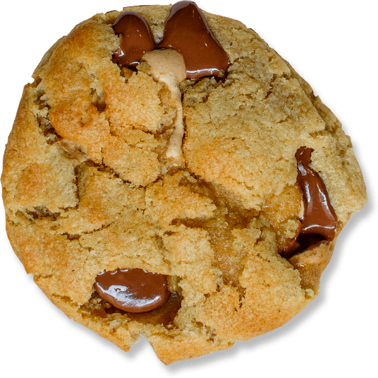

L’histoire du S’more
Traditionnellement consommé autour d’un feu de camp lors des
veillées estivales des Scouts aux Etats-Unis (on retrouve d’ailleurs
sa trace dans un manuel des « Girl Scout » de 1927), le S’more
consiste traditionnellement en un casse-croute de fortune : faites
griller un chamallow, placer le entre deux Graham crackers,
ajoutez-y un carré de chocolat, dégustez ! La légende dit que son
nom viendrait du fait qu’on ne peut pas s’arrêter d’en manger :
« Give me more », « Some more », aurait donné son nom au « S’more ».
\n Les américains ont tenté de mélanger ce snack avec une autre de
leur recette non moins typique : le cookie. Ça a donné le « S’more
cookie », un cookie fourré à la guimauve, très apprécié là-bas mais
encore peu répandu en France. Il fallait que nous comblions ce
manque avec une guimauve artisanale au miel, moins sucrée et donc
plus adaptée au palais des français. D’un simple test au début, nous
avons été conquis par le côté « ourson en guimauve » de notre
enfance, le jeu de texture lui donne tout son charme et fait du
S’more un incontournable !